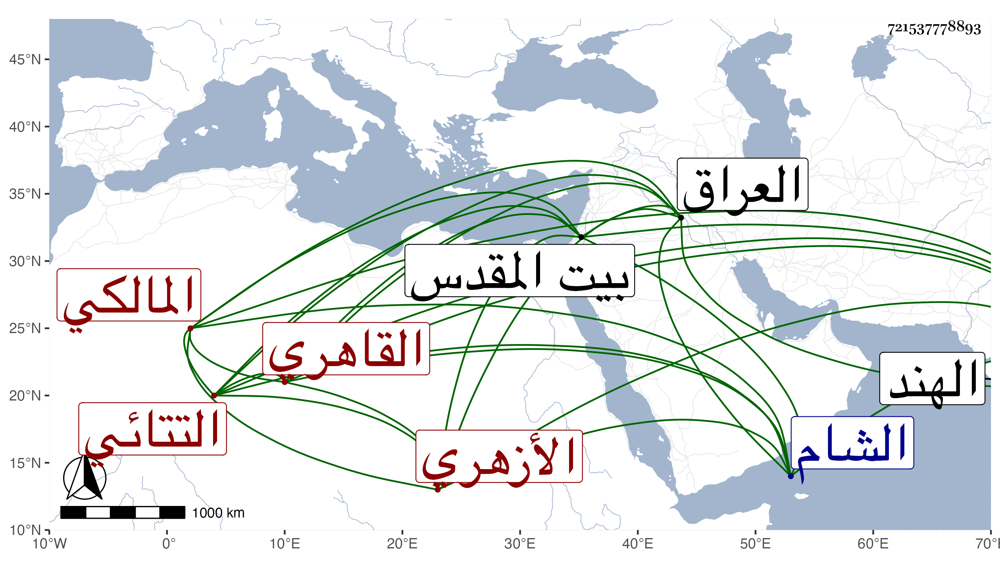

0902Sakhawi.DawLamic.ITO20230111-ara1.EIS1600.721537778893
Biography ID: 721537778893
646
قاسم بن هرون بن محمد بن موسى التتائي الأصل القاهري الأزهري المالكي شقيق محمد وأخو الجمال يوسف لأمه الآتيين . ممن اشتغل قليلا وتدرب بأبيه في الحفظ وغيره ، وأقبل على التكسب وسافر في ذلك له ولغيره إلى العراق ثم إلى الهرموز ثم إلى الهند وغيرها ودخل الشام وبيت المقدس وغاب نحو ست سنين ورجع بعد أهوال وأحوال بخفي حنين فجلس زموطيا ... تحت الربع مع كتابته بالأجرة ويذكر بصيانة وتعفف واستحضار لقليل من الفروع ومداومة على التلاوة والعبادة .
